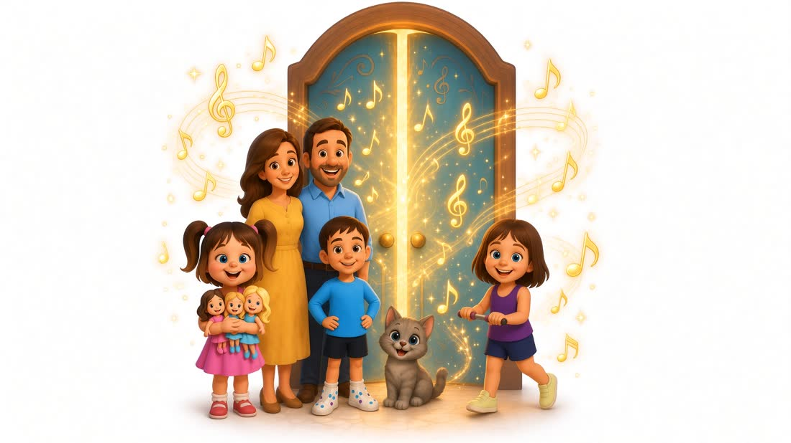
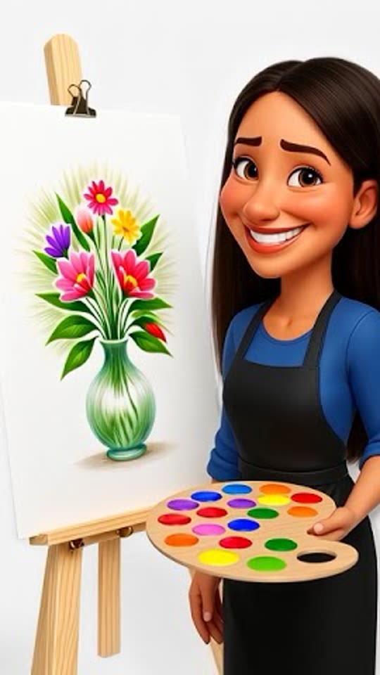
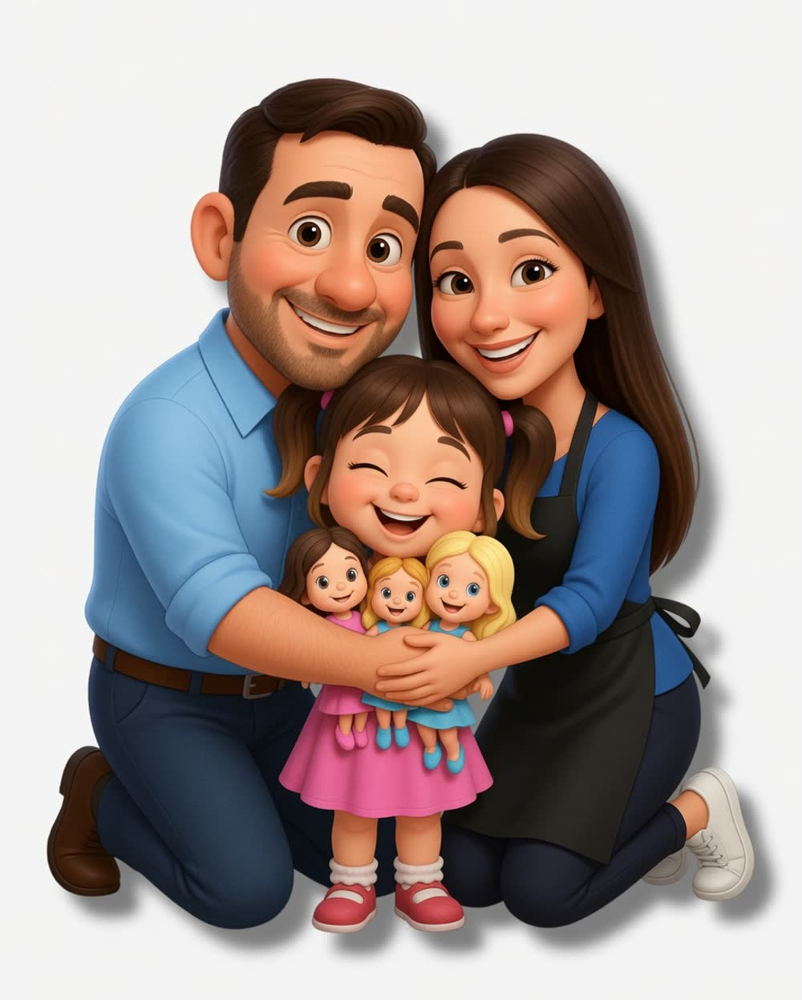
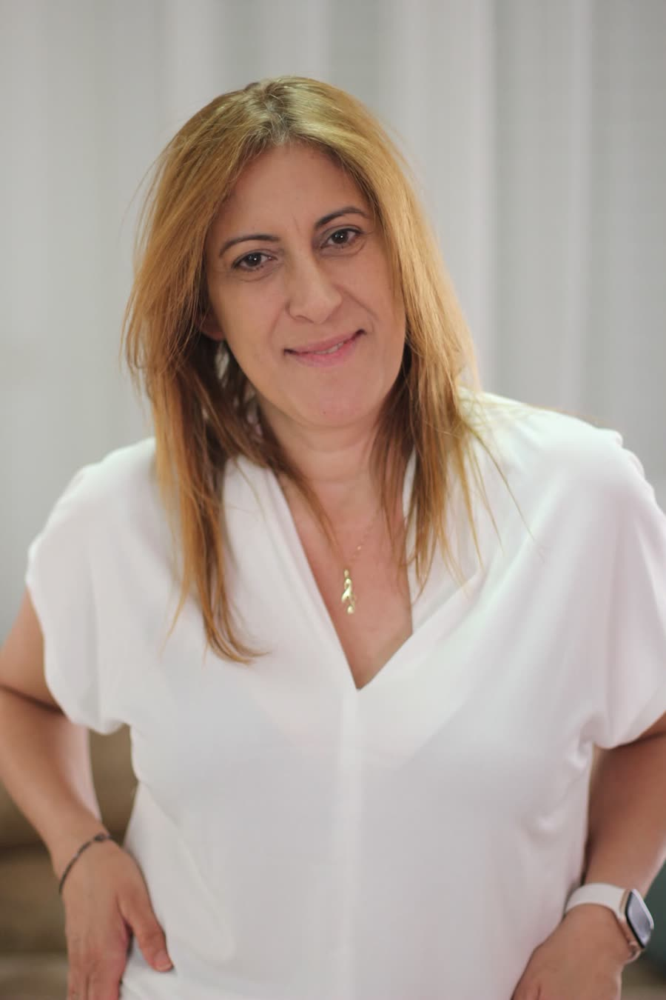

הילד חווה הצלחה
כל משחק וכל שיר בנויים כך שהילד יכול להשתתף, להצליח ולהרגיש: "אני יכול!" - כבר מההתחלה.
כאן מוסיקה הופכת לעולם שילדים רוצים להיכנס אליו
סול והחברים מזמינים את הילדים לעולם של סיפורים, שירים, משחקים, יצירה ונגינה - שבו כל הרפתקה מלמדת אותם מוסיקה, כמעט בלי להרגיש.

תנו לי דקה להראות לכם למה יצרתי אותה, ומה הילד שלכם עומד לפגוש בפנים.
אצלנו יש להם שמות, פנים, אופי וסיפור.
הכירו את המשפחה של סול - שבע דמויות שהופכות את הצלילים לחברים שילדים זוכרים.
לחצו על דמות ובואו להכיר 🎵
איך נולדה המשפחה, ואיך שבעה צלילים הפכו לשבע דמויות עם שמות, פנים וסיפור. זה הסיפור שהילדים פוגשים ברגע שהם נכנסים - וכאן הוא פתוח לכולם.

צפייה בסיפור
פסנתר אונליין שנפתח ישירות בדפדפן - במחשב, בנייד או בטאבלט. שבע הדמויות
על הקלידים, בלי להוריד ובלי להתקין, ובלי צורך בפסנתר אמיתי בבית.
השאירו מייל ונשלח לכם את הקישור.
היא לתת לילדים לגלות מה הם מסוגלים לעשות.
דרך מוסיקה, משחק ודמיון, ילדים מתנסים, מצליחים, מעזים לנסות שוב - ומגלים שהלמידה יכולה להיות מקום של שמחה, סקרנות וביטחון.
כל משחק וכל שיר בנויים כך שהילד יכול להשתתף, להצליח ולהרגיש: "אני יכול!" - כבר מההתחלה.
דרך דמויות, סיפורים, שירים ומשחקים, המוסיקה הופכת ממשהו שצריך "ללמוד" לעולם שהילד רוצה לחזור אליו.
במקום עוד סרטון או משחק ללא ערך, הילד נהנה מחוויה אינטראקטיבית שמשלבת משחק, מוסיקה ולמידה מתוך הנאה.
בדיוק בשביל זה יצרנו את "המשפחה של סול"
בכל כניסה מחכה לו משהו חדש לגלות - משחק, דמות, שיר או אתגר קצר.
לא צריך לדעת לקרוא, לא צריך ניסיון קודם במוסיקה, ואפילו לא חייבים פסנתר בבית. פשוט נכנסים ומתחילים לשחק.
דרך משחקים, שירים והתנסויות מוסיקליות, הילד שלכם יגלה איך:

בפנים מחכים להם:
למצטרפים החודש
מוסיקה היא לא המטרה - היא הדרך.
דרך לשחק, לנסות, ליצור, להצליח - ולגלות כמה כיף ללמוד משהו חדש.
במיוחד אם הילד שלכם…
אוהב לשחק, לשיר ולגלות דברים חדשים - בין אם הוא כבר נמשך למוסיקה ובין אם זו הפעם הראשונה שהוא פוגש אותה מקרוב.
לא צריך לדעת לנגן. לא צריך לדעת לקרוא תווים. ולא צריך פסנתר בבית כדי להתחיל.

כילדה, המוסיקה הייתה המקום שבו מצאתי את הקול שלי. דרך הפסנתר והיצירה למדתי לבטא את עצמי ולהרגיש שרואים אותי.
במשך השנים לימדתי אלפי ילדים במגוון מסגרות. בשיעורים פרטיים, בתי ספר, גני ילדים, Y‑tek, במפגשים פרונטליים ומפגשי און־ליין.
שוב ושוב ראיתי ילדים שלא מתחברים למוסיקה רק בגלל הדרך שבה מציגים להם אותה - בצורה יבשה ותאורטית. הבנתי שאם אדבר בשפה של ילדים, הכל ישתנה. וככה נולדה שיטת הלימוד "המשפחה של סול" שמבוססת על משחקיות, הנאה, סיפוק וחוויה.
היום אני מזמינה עוד ילדים להצטרף לעולם שבו תווים הופכים לדמויות, מוסיקה הופכת למשחק, והלמידה הופכת לחוויה של סקרנות, גילוי והנאה.
המשפחה של סול מיועדת לילדים בגילאי 4–8. הפעילויות בנויות כך שכל ילד יכול לפגוש את המוסיקה בדרך שמתאימה לגיל ולקצב שלו - דרך משחק, הקשבה, שירים, יצירה ונגינה.
ממש לא. אין צורך לדעת תווים, לנגן או להכיר מושגים מוסיקליים מראש. הילדים פוגשים את המוסיקה בהדרגה, דרך משחק, התנסות והנאה.
ממש לא. לא צריך פסנתר או אורגנית בבית כדי להצטרף למשפחה של סול.
בתוך העולם מחכה לילדים הפסנתר הווירטואלי של סול, שמאפשר להם להכיר את הקלידים, להתנסות ולנגן כחלק מהמשחק והלמידה - ישירות מהמחשב, מהנייד או מהטאבלט.
זה בסדר גמור. הפעילויות לא מבוססות על היכולת של הילד לקרוא הוראות. העולם של סול בנוי בצורה חזותית, משחקית ושמיעתית, כך שגם ילדים שעדיין לא קוראים יכולים ליהנות ולהשתתף.
הפעילויות במשפחה של סול לא בנויות כמו שיעור ארוך שבו צריך לשבת ולהקשיב. הילדים פוגשים משחקים, דמויות, מוסיקה ומשימות שונות, ויכולים להתקדם בקצב שמתאים להם.
לא חייבים להפוך את המשפחה של סול לעוד משימה שצריך "לסיים". אפשר לעצור, לחזור למשחק או לפעילות שאהב, לבחור משהו אחר ולחזור בהמשך. המטרה היא לשמור על הסקרנות, ההנאה והרצון להמשיך לגלות.
ממש לא. לצד השיעורים מחכים לילדים משחקים אינטראקטיביים, שירים, פעילויות נגינה, קצב ויצירה, משימות עם הדמויות ועוד הפתעות מעולמה של המשפחה של סול.
לא. המשפחה של סול נבנתה כך שהילדים יוכלו להתמצא ולהתקדם בה באופן עצמאי ככל האפשר.
במקומות שבהם צריך הסבר מחכים להם הסברים מוקלטים וסרטוני הדרכה בכפתור ייעודי, כך שהם יכולים להבין מה עושים ולהמשיך בעצמם.
כמובן שאפשר להצטרף וליהנות יחד כשמתחשק - אבל אין צורך לשבת ליד הילד כדי להפעיל עבורו את החוויה.
לא. המשפחה של סול לא נועדה להיות תחליף לשיעורי פסנתר. היא פותחת לילדים דלת לעולם המוסיקה בדרך משחקית ומהנה ומאפשרת להם להכיר תווים, קצב, יצירה ונגינה בדרך שמתאימה להם.
הגישה למשפחה של סול היא ללא הגבלת זמן.
אפשר לחזור לעולם של סול שוב ושוב, לחזור למשחקים ולפעילויות האהובות, לגלות דברים חדשים ולהתקדם בקצב שמתאים לילד - בלי לחץ להספיק ובלי תאריך תפוגה.
משחקים, שירים, דמויות, יצירה ונגינה - עולם מוסיקלי שלם שהוא יכול לגלות בקצב שלו.
מצטרפים למשפחה של סוללגילאי 4–8 · לא צריך פסנתר בבית · גישה ללא הגבלת זמן